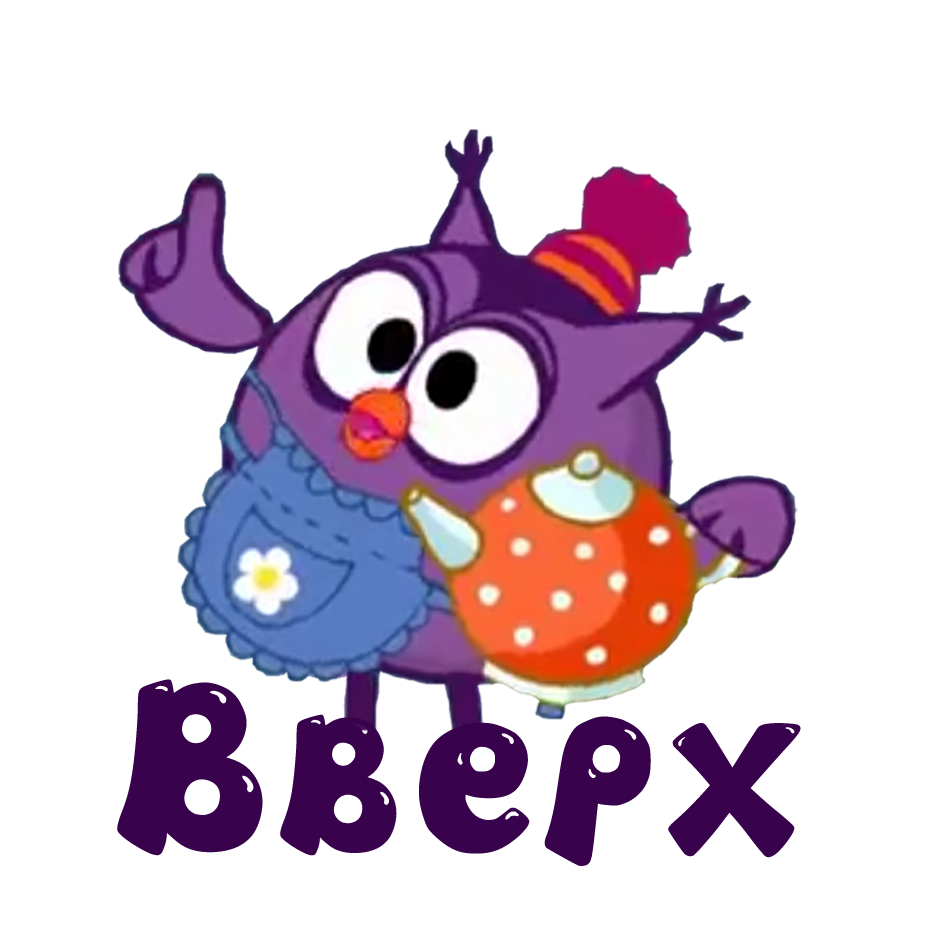
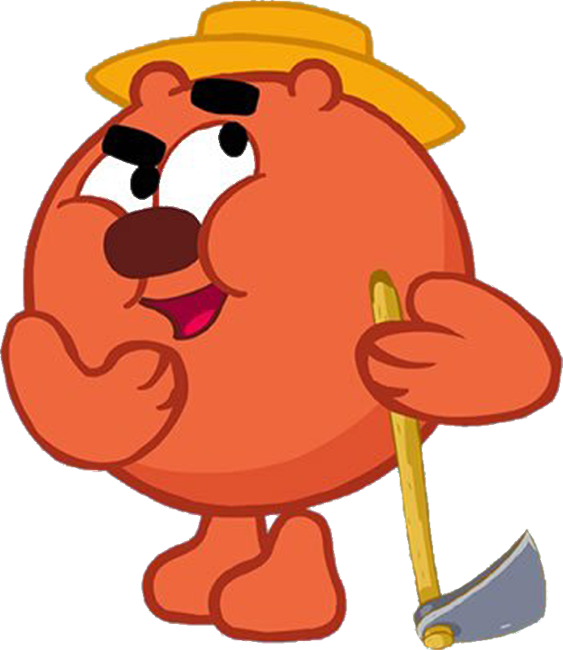
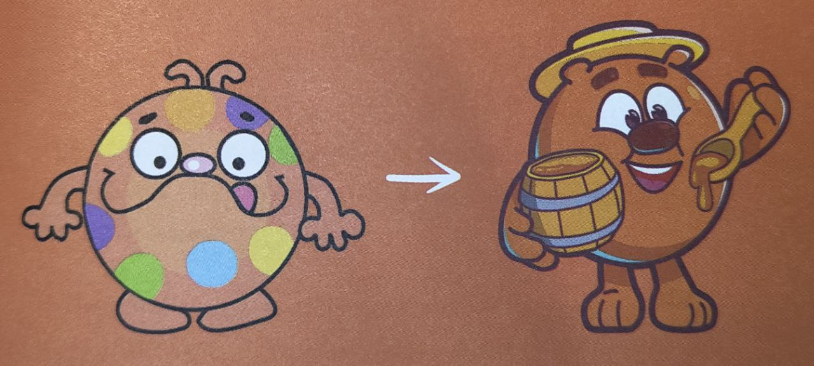
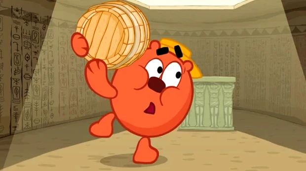

В начальной версии Копатыч был Буль-До – художником-самоучкой и притом огородником. Псом-бульдогом, покрытым пятнами краски. «В этом персонаже сочетается несочетаемое, критиковал Буль-До Анатолий Прохоров, - художник возвышенный, огородник приземлённый. Так не бывает».

Промахом был и выбор бульдога - всё же отдаёт он каким-то элементом заморских графьев то ли англичанин, то ли француз. Решили остановиться на медведе. Игорь Шевчук придумал ему имя Копатыч: от слова «копать» и исконно русского прозвища мишки Потапыч.
Копатыч - моё посвящение восхитительному актеру Анатолию Папанову, объясняет актер озвучания Михаил Черняк. С «Ну, погоди!» прошло всё моё детство. Его фирменный голос дорог мне, я пытался пародировать его со сцены, ещё будучи школьником. Однажды даже получил за это грамоту. Копатыч разговаривает так, как если бы это делал сам Папанов.
Главное занятие Копатыча на протяжении весны, лета и осени — это забота и уход за своим огородом. Он работает день и ночь, неделями напролёт. Сажает, поливает, окучивает, пропалывает. Но помимо этого есть у него ещё одна забота — это пасека с его любимыми пчёлами. Копатыч — православный христианин: в некоторых сериях читает молитву «Отче наш» и крестится. Говорит на южнорусском диалекте.

Любит сам изобретать и выращивать новые виды растений и овощей, например, розы-брюквы («Не может быть»), которые помимо приносимой пользы ещё и выглядят красиво. Он может вырастить всё, кроме ананасов. А совсем недавно нашему медведю удалось вырастить на своем огороде гигантскую жёлтую тыкву! Окружающий мир ласково называет «матушка-природа». Ведь кто, как не Копатыч, может по достоинству оценить дары, которые преподносит ему плодородная земля!
Копатыч однажды чуть не состоялся как бог. В серии, где все сочиняли летописи, конечная фраза сценария звучала так: «В начале было слово, и слово это было - Копатыч». Но создатели проекта посчитали, что это уж слишком, и Копатыч остался просто Копатычем.